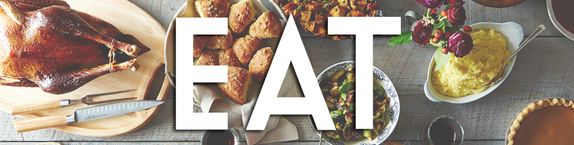

Nutrition
Eating well doesn't have to be complicated or confusing. Understanding the building blocks of food and calculating the energy your body needs is a great place to start.
The 5 building blocks of food
Different foods contain different essential nutrients and eating a wide variety of nutritious foods is the key to building a solid foundation of health.
Fruits - 2 serves
Fruit is the sweet, fleshy, edible part of a plant that usually contains seeds. It is generally eaten raw but some varieties can also be cooked. Choosing fruits in season provides better value and better quality. Eating seasonally also adds more variety to your diet throughout the year. Choosing different coloured fruits increases the variety of nutrients, which can enhance your health!
Veggies - 5 serves
Vegetables and legumes/beans
Vegetables come from many different parts of the plant, including the leaves, roots, tubers, flowers, stems, seeds and shoots.
Legumes are the seeds of the plant and are eaten in their immature form as green peas and beans, and the mature form as dried peas, beans, lentils and chickpeas. Just like fruits, choosing different coloured vegetables increases the variety of nutrients, which can enhance your health!
Meat - 2-3 serves
Lean meat, poultry, fish, eggs, nuts, seeds, legumes/beans
Traditionally, the foods from this food group are considered ‘protein rich’ and most Australians have no trouble eating enough protein each day. More importantly however, this food group also provides a wide variety of other nutrients such as: iodine, iron, zinc, vitamins, especially B12, and essential fatty acids.
 Dairy - 2-3 serves
Dairy - 2-3 serves
Milk, yoghurt, cheese and/or alternatives
A wide range of milk and yoghurt products are available with varying levels of fat. Milk can be fresh, dried, evaporated, or UHT (long life). Soy, rice or other cereal drinks and yoghurts are an alternative.
Because cheese can be high in kilojoules, saturated fat and salt, it is best to limited to 2-3 times a week.
Grain - 3-6 serves
Grain (cereal foods)
Grain foods are mostly made from wheat, oats, rice, rye, barley, millet, quinoa and corn. The different grains can be cooked and eaten whole, ground into flour to make a variety of cereal foods like bread, pasta and noodles, or made into ready-to-eat breakfast cereals.
Healthy food hacks
Get healthier instantly with these ingredient swaps that cut kilojoules and saturated fat while bumping up the flavour, fibre and goodness.
| Try swapping... | With... |
|---|---|
| High-fat crackers | Veggie sticks with dip |
| High-sugar breakfast | High fibre breakfast cereal |
| Sausages | Lean meat |
| Fried egg | Boiled |

Guidelines
Daily exercise + smart eating = healthy weight
To achieve and maintain a healthy weight, be physically active and choose amounts of nutritious food and drinks to meet your energy needs.
Less of the bad, more of the good
Enjoy a wide variety of nutritious foods from the Five Food Groups every day and drink plenty of water. Limit intake of foods containing saturated fat, added salt, added sugars and alcohol.